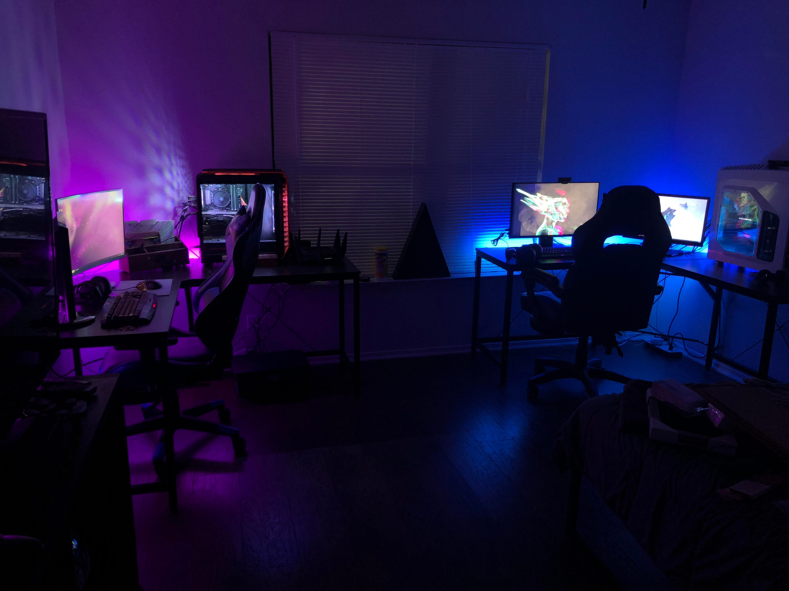

Play yourself like Sam and Aidan, The gamer Couple


In this article published yesterday about the bookshelf of Ramli John, I announced that I will be writing about this tweet which is about Fortnite a very popular battle royale genre game that is trying to leverage an idea that Godda Game is playing with but by focusing on brands and primarily luxury brands. The tweet I am talking about is here
As you can see Fortnite is starting to exploit celebrities as characters that players can choose for playing. They for sure will buy it.
Play yourself is all about that playing your own avatar that will be a high fidelity 3d representation of you designed by high qualified 3d Character designers. This character that represents you can be used in any RPG games that you like and will be able to have any luxury products of brands like the ones below
This well-designed avatar of Lebron James is proving that this model of gaming makes complete sense but Godda Game just decided to focus on those who love and buy luxury products and those who work in the luxury industry.
But this new genre of Gaming experience could not be successful without gamers like this couple, I am presenting in this following paragraph for the sake of reaching two targets with one shoot because the paragraph below can be seen as an implementation of this experiment about couples I was writing about.
Sam and Aidan, better known as The Gamer Couple! are these kinds of couples that will likely interact with the new genre of games that Godda Game is trying to design and ship. Sam and Aidan are not only passionate gamers, but they also are sharers because they share their gaming experience with us using creative videos like the one below
Characters in Fornite are highly creative and at Godda Game They (actually just me) work hard for your self character to be also able to be creatively customized with products of different brands that you love.
Book Dojo the publishing startup is passing to ….. the thanks of Godda Game this tech gaming experience studio for providing us with insights about what interesting for couples that play games and Godda Game hope that this idea presented above is also interesting for you.
Godda Game is trying to know how games can empower couples?
Because those who connect people with ideas are those who will lead the connections economy we are living in.
If you have a clue about gaming experience for couples that can help Godda Game, please reach out to Book Dojo which will forward your idea to who is actually in charge (actually me alone).